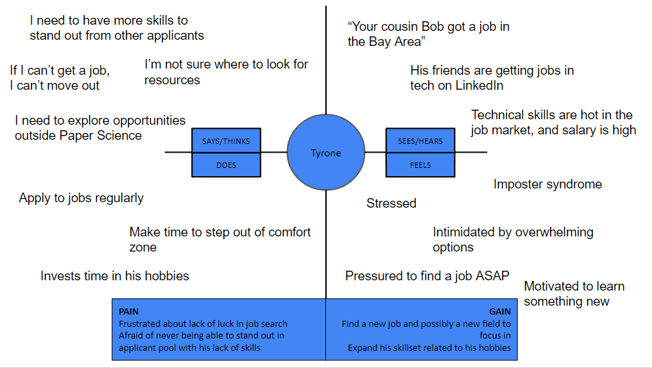
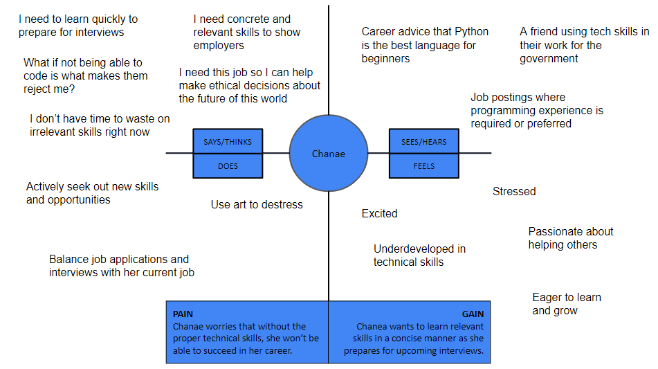
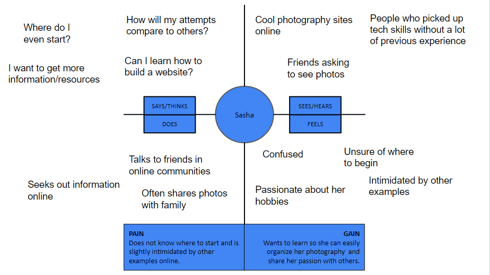

Persona 1: Tyrone

Tyrone is a 24 year old recent graduate of Western Michigan University, where he majored in Paper Science & Engineering. Since graduating, he has been in the job search for a couple of months, but hasn’t had any luck. His applications have all been rejected in the first round, and he is looking to expand his skillset, and even search for jobs in a different field. He currently lives with his parents but is looking to move in with his girlfriend soon, and wants to find a way to contribute for rent as soon as possible. His hobbies include gaming, PC building, and taking videos of his trips and everyday life. He has always wanted to learn how to edit videos more professionally. He wants to potentially expand and finetune his skills from his hobbies and add that to his professional skills section in his resume.
Empathy Map

Persona 2: Chanae
Chanae (22) is just entering the job market as a senior getting ready to graduate from college in a few months and wants to grow her career in international relations. She is open to working for the government or the UN, and knows that an important part of these roles is analyzing data such as public opinion and drawing insight from that. She wants to learn the basics of a language like Python or R in order to be more marketable. Chanae is very passionate about making a difference in the world with her career, but she also explores her artistic side during her time off and enjoys painting and photography. She is currently working a part time job to stay afloat at the same time as she handles job applications and interviews.
Empathy Map

Persona 3: Chad
Chad is an 18 year old recent high school graduate who will be attending University of California at Davis in the fall as an undeclared major. He is unsure what he wants to do in college, and has no clue what possible career paths exist for him. He has a wide range of hobbies, but doesn’t see himself pursuing a career in one of them. He is interested in football - as he is attending UC Davis as a student athlete for his scholarship, nutrition, and digital art. In high school, he has had a side hustle of making album covers for his friends who are aspiring Soundcloud rappers. He does not see a realistic long-term future in football and is hoping that exposing himself to different fields of study will allow him to figure out a back-up, academic-wise, if football does not work out.
Empathy Map
Persona 4: Sasha
Sasha is a 34 year old successful environmental lawyer in Oregon. She did her undergrad at Rutgers University and completed her law degree at Columbia University. She is happy with her career and works with state legislatures to provide counsel on drafting environmental policy for national parks. One of her passions is photography - she brings her camera almost wherever she goes to take pictures of nature, shops she visits, and her favorite foods. She does not consider herself a professional photographer but is a part of online communities that talk about photography and share advice. She wants some way to organize her photos in a neat collection to more easily show others, and maybe even highlight her monthly favorites. However, she never took any courses that taught her technical skills, and her searches for photography websites online have only shown her really complex sites for professionals. Sasha is very resourceful and confident in her skills, but she’s unsure when approaching areas she has never had experience in.
Empathy Map
